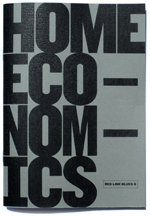
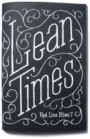
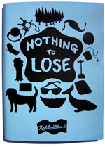
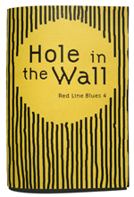
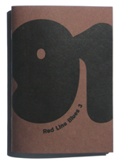
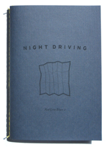

Issues of Red Line Blues are $5 each.
Plus $1.25 for shipping ($3.50 for international shipping).
All sales are final.
We’d love to be able to accommodate returns and exchanges, but with our meager operation, we just have to hope that you’ll be happy with your order — or that you can pass it on to someone who may be. Of course if we screw up on our end, like send you something you didn’t ask for, shoot us an e-mail and we’ll gladly set things right.
Red Line Blues 8: Home Economics
Spring 2011
64 pages
5" x 7"
First edition of 300
From garden to dinner table, from scrimping to entertaining — intimate stories and photos from households across America. A poet finds meaning in an old Singer sewing book; an author abandons the big city to work down on the farm; a mother makes hard choices to feed her family during the recession; a writer finds a beau through the local food co-op; and much more!
Red Line Blues 7: Lean Times
Winter 2010
76 pages
5" x 7.5"
First edition of 500
Giving the recession what ’fer! Features a cover screen-printed by hand, and full-color artworks inside. Filled with stories both fantastic and brutal about surviving — and sometimes thriving — when times are tight.
 Red Line Blues 6: Nothing to Lose
Summer 2008
96 pages
4.5" x 6.25"
Edition of 300
The big leap; the impossible dream. The seat of your pants and the skin of your teeth. Poems and stories from folks at the bottom who simply refuse to give in.
Red Line Blues 5: Lady Day
Winter 2007
64 pages
4.5" x 6.25"
Edition of 300
Billie Holiday — her voice, her aura, her era. A strong group of writers bears witness, confirming that the Lady is ever current.
Red Line Blues 4: Hole In the Wall
Summer 2007
72 pages
5" x 7"
Edition of 400
From dive bars to dumpsters, roadhouses to rat holes — authors, poets, and a couple musicians reflect on the places and spaces they just can’t get out of their minds.
Red Line Blues 3: 1991
Spring 2007
96 pages
4" x 5.5"
Edition of 400
The year of Desert Storm, Family Matters, Kristi Yamaguchi, and Terminator 2. And much, much more. Red Line Blues writers look back on a year of greatness and embarassment.
Red Line Blues 2: Night Driving
Fall 2006
76 pages
4.5" x 6.5"
Edition of 500
Features a hand-stitched binding. Tales from life on the road — made real with tail lights and semi-trailers, windows rolled down and blinding rain, star-filled skies and the occasional breakdown.